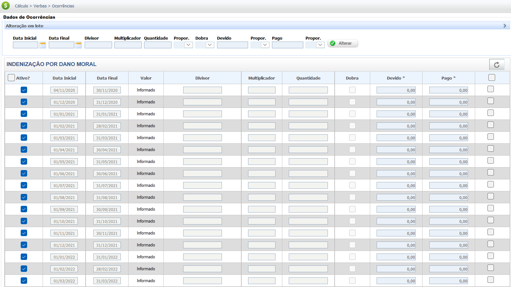
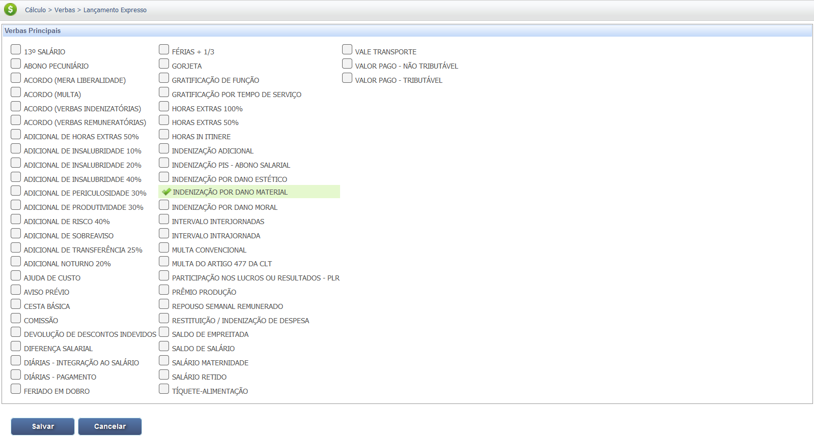
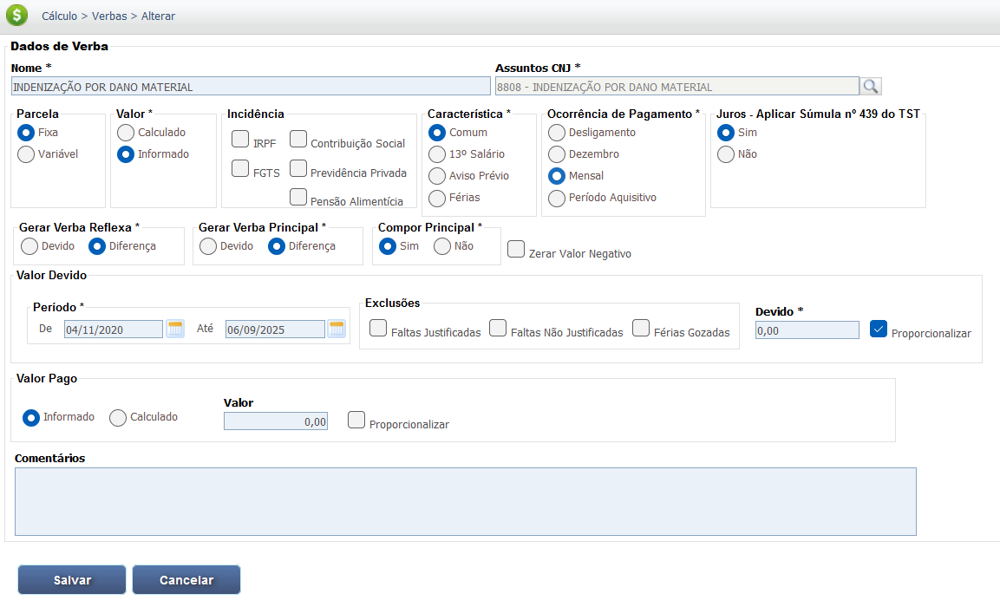
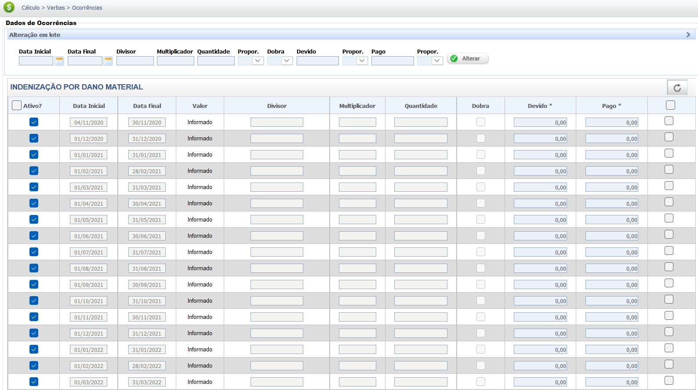
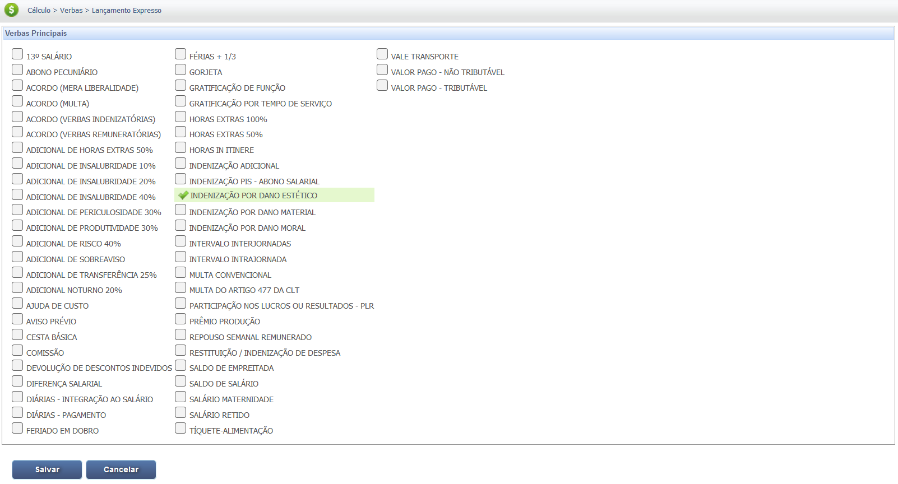
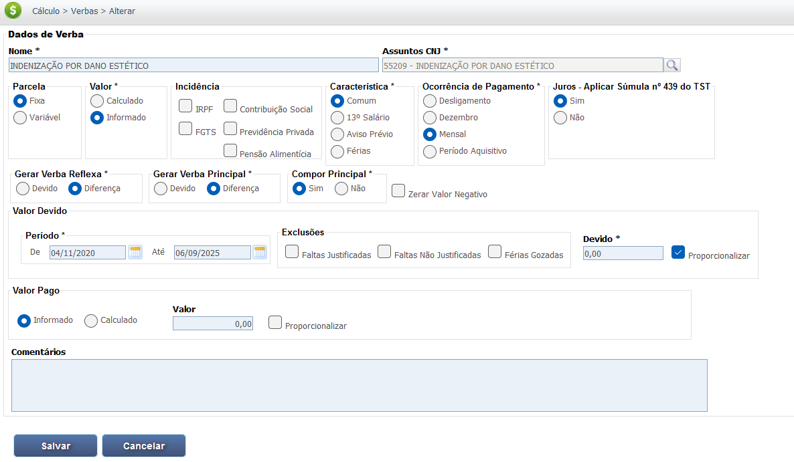
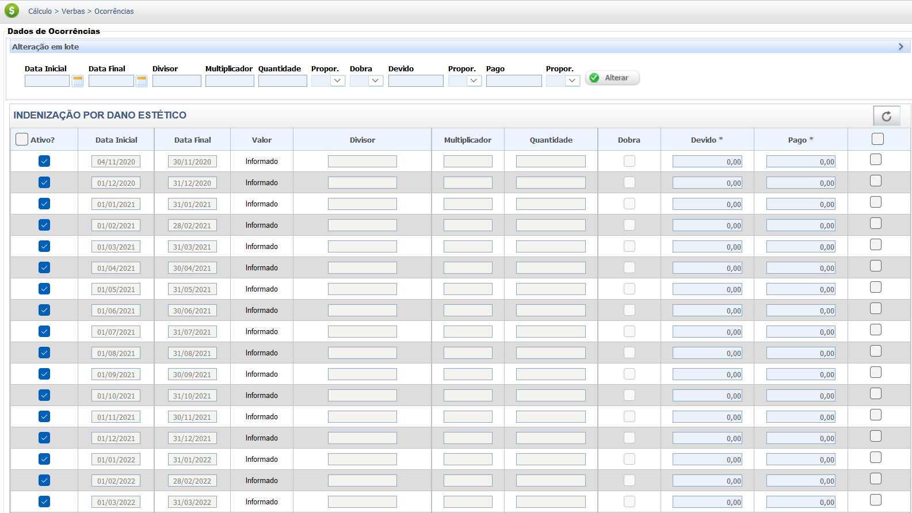

Dano Moral, Estético e Patrimonial
O foco da reparação de danos na Justiça do Trabalho reside na Responsabilidade Civil do empregador por atos ilícitos que causem prejuízos ao empregado. A reparação se divide em categorias principais:
As Categorias de Dano
1. Dano Patrimonial (Material)
É a perda ou diminuição do patrimônio material. Sua reparação busca a integralidade do prejuízo e é regida principalmente pelo Código Civil.
- Danos Emergentes (Gastos e Despesas)
- Lucros Cessantes (Perda de Renda Futura)
2. Dano Extrapatrimonial (Moral e Estético)
Foca na lesão aos bens de ordem moral e existencial da pessoa (honra, imagem, intimidade). É regulamentado pela CLT.
- Assédio Moral ou Sexual
- Ofensa à Honra, Imagem
- Sofrimento por Acidente/Doença
- Dano Estético (Cumulável com o Moral - Súmula 387 STJ)
Requisitos Comuns para a Indenização:
Para que haja a obrigação de indenizar, é essencial comprovar:
- Ato Ilícito: Conduta omissiva ou comissiva do empregador.
- Dano: O prejuízo efetivo (moral ou material).
- Nexo Causal: Vínculo direto entre o ato ilícito e o dano sofrido.
Base Legal e Jurisprudência
A responsabilidade do empregador é regida pela teoria da responsabilidade civil (Art. 927 do Código Civil), aplicando-se a modalidade subjetiva ou objetiva (comum em atividades de risco).
Fontes Normativas
Consolidação das Leis do Trabalho (CLT):
- Artigo 223-B (Fundamento):
"Causa de pedir do Dano Extrapatrimonial e sua reparação no âmbito trabalhista."
- Artigo 223-G (Critérios e Limites):
"Fixa os critérios de arbitramento judicial (natureza do bem lesado, grau de culpa, situação das partes) e os tetos indenizatórios baseados no último salário contratual."
Código Civil (Lei nº 10.406/2002):
- Art. 927 (Responsabilidade Civil):
"Aquele que, por ato ilícito (arts. 186 e 187), causar dano a outrem, fica obrigado a repará-lo. Haverá obrigação de reparar o dano, independentemente de culpa, nos casos especificados em lei, ou quando a atividade normalmente desenvolvida pelo autor do dano implicar, por sua natureza, risco para os direitos de outrem."
Jurisprudência
Dano Estético e Moral
Súmula nº 387 do STJ (Acúmulo de Danos):
"É lícita a cumulação das indenizações de dano estético e dano moral."
*(Nota: O dano estético, por se referir à alteração morfológica, é autônomo e cumulável com o dano moral, que foca na dor e no sofrimento psíquico).*
Dedução de Benefício Previdenciário
Entendimento Consolidado do TST (Dano Patrimonial/Pensão):
"A indenização por dano material (pensão mensal) paga pelo empregador deve ser compensada/deduzida do valor do benefício previdenciário (INSS) recebido pelo empregado em razão do mesmo fato gerador (acidente ou doença)."
Responsabilidade Objetiva
Precedente do TST (Atividades de Risco):
"A responsabilidade objetiva do empregador (aquela que dispensa a prova de culpa) é aplicável em casos de acidentes de trabalho quando a atividade desenvolvida pela empresa, por sua natureza, implica risco acentuado para os empregados."
Base de Cálculo e Deduções
A quantificação busca a reparação integral do prejuízo, seguindo métodos distintos para danos materiais (objetivos) e danos morais (subjetivos).
1. Dano Patrimonial (Elementos e Pensão Mensal)
Danos Emergentes (Perdas Efetivas)
São os custos e despesas comprovadas que o empregado teve ou terá que arcar diretamente em função do dano (ex: despesas médicas, medicamentos, custos de reabilitação).
Lucros Cessantes (Perda de Capacidade)
Representam o que o trabalhador deixou de lucrar devido à incapacidade. É transformado em pensão mensal vitalícia (ou temporária).
Base de Cálculo da Pensão:
- Remuneração: Última remuneração integral do empregado.
- Grau de Incapacidade: O valor da pensão é estritamente proporcional ao grau de redução da capacidade, conforme laudo pericial.
Dedução Previdenciária:
O Benefício do INSS (Auxílio-Doença/Aposentadoria) referente ao mesmo fato gerador é deduzido da pensão mensal (Lucros Cessantes) paga pelo empregador.
2. Dano Extrapatrimonial (Arbitramento e Limites - Art. 223-G)
A quantificação é realizada pelo juiz, observando a natureza da ofensa e o salário contratual como teto legal.
Limites de Valor (Tetos Máximos - Salário Contratual):
- Natureza Leve: Até 3x o último salário contratual.
- Natureza Média: Até 5x o último salário contratual.
- Natureza Grave: Até 20x o último salário contratual.
- Natureza Gravíssima: Até 50x o último salário contratual.
Diferença de Natureza:
No dano moral, o salário é um limite e critério de referência para o arbitramento, enquanto no dano material (pensão), o salário é a base do cálculo do prejuízo efetivo.
Reflexos sobre Outras Verbas
A condenação em pensão mensal por lucros cessantes ou o pagamento de danos, principalmente em casos de doença ocupacional ou acidente, podem gerar reflexos em verbas acessórias devidas ao empregado, como 13º salário e Férias.
Cálculo de Reflexos
Os reflexos são calculados sobre o valor da pensão mensal a que o empregado teria direito se estivesse trabalhando, considerando o percentual de incapacidade.
1. 13º Salário (Gratificação Natalina):
O 13º salário deve incidir sobre a pensão mensal (Lucros Cessantes), calculado na proporção da incapacidade. É pago em 12 parcelas mensais junto com a pensão ou em parcela única no final do ano, dependendo da decisão judicial.
2. Férias e Terço Constitucional:
As férias (e seu adicional de 1/3) também são devidas sobre o valor da pensão. O cálculo segue a lógica de 1/12 avos por mês de trabalho (ou afastamento indenizável).
3. FGTS (Fundo de Garantia por Tempo de Serviço):
Em regra, a indenização (pensão) não constitui salário e não gera recolhimento de FGTS, salvo se houver expressa determinação judicial para pagamento da diferença salarial referente ao período de afastamento.
Calculadora (Simulação)
Esta calculadora simula os valores de referência para indenizações de Dano Patrimonial (Pensão Mensal, proporcional à incapacidade) e o Teto Máximo Legal para Dano Moral, conforme os critérios da CLT (Art. 223-G).
Resultados da Simulação:
Pensão Mensal Estimada (Dano Patrimonial):
R$ 0,00
Teto Máximo Legal (Dano Moral - CLT):
R$ 0,00
Estes valores são simulações. O valor final da condenação é determinado pelo Juiz, que considera as provas e a totalidade dos critérios legais.
Lançamento no PJe-Calc (Dano Moral)
A seguir, confira o passo a passo para o lançamento da verba no PJe-Calc, utilizando a opção "Expresso":
-
Acessar Verbas e Escolher Lançamento: No menu de
navegação à esquerda, clique na opção Verbas para iniciar o lançamento. Após o
comando,
será exibida a tela para escolha do Lançamento da Verba. Escolha a opção Expresso.

- Seleção da Verba: O sistema abrirá as opções de verbas, escolha a verba Dano Moral e clique no botão Salvar
-
Quadro de Verbas e Ações: O sistema exibirá um quadro
com os campos:
- Ações - contendo as opções de configurações da verba selecionada (parâmetros,
ocorrências e
exclusão)

-
- Parâmetros da Verba

-
- Ocorrências da Verba

-
- Excluir

- Verba Principal - verba selecionada para lançamento.
- Verba Reflexa - em que ao clicar no botão Exibir serão listadas todas as verbas reflexas ligadas a Verba Principal.
- Parametrização da Verba: Ao clicar no botão Parâmetros da Verba serão exibidas todas as configurações necessárias para a parametrização da Verba Principal.
- Registro de Ocorrências: Ao clicar no botão Ocorrências da Verba serão exibidas todas as configurações necessárias para registro das ocorrências da Verba Principal. 
Lançamento no PJe-Calc (Dano Material)
A seguir, confira o passo a passo para o lançamento da verba no PJe-Calc, utilizando a opção "Expresso":
-
Acessar Verbas e Escolher Lançamento: No menu de
navegação à esquerda, clique na opção Verbas para iniciar o lançamento. Após o
comando,
será exibida a tela para escolha do Lançamento da Verba. Escolha a opção Expresso.
- Seleção da Verba: O sistema abrirá as opções de verbas, escolha a verba Dano Material e clique no botão Salvar 
-
Quadro de Verbas e Ações: O sistema exibirá um quadro
conforme as configurações para a verba de Dano Material.
- Ações - contendo as opções de configurações da verba selecionada (parâmetros, ocorrências e exclusão).
- Verba Principal - verba selecionada para lançamento.
- Verba Reflexa - em que ao clicar no botão Exibir serão listadas todas as verbas reflexas ligadas a Verba Principal (se aplicável).
- Parametrização da Verba: Ao clicar no botão Parâmetros da Verba serão exibidas todas as configurações necessárias para a parametrização da Verba Principal. 
- Registro de Ocorrências: Ao clicar no botão Ocorrências da Verba serão exibidas todas as configurações necessárias para registro das ocorrências da Verba Principal. 
Lançamento no PJe-Calc (Dano Estético)
A seguir, confira o passo a passo para o lançamento da verba no PJe-Calc, utilizando a opção "Expresso":
-
Acessar Verbas e Escolher Lançamento: No menu de
navegação à esquerda, clique na opção Verbas para iniciar o lançamento. Após o
comando,
será exibida a tela para escolha do Lançamento da Verba. Escolha a opção Expresso.
- Seleção da Verba: O sistema abrirá as opções de verbas, escolha a verba Dano Estético e clique no botão Salvar 
-
Quadro de Verbas e Ações: O sistema exibirá um quadro
conforme as configurações para a verba de Dano Estético.
- Ações - contendo as opções de configurações da verba selecionada (parâmetros, ocorrências e exclusão).
- Verba Principal - verba selecionada para lançamento.
- Verba Reflexa - em que ao clicar no botão Exibir serão listadas todas as verbas reflexas ligadas a Verba Principal (se aplicável).
- Parametrização da Verba: Ao clicar no botão Parâmetros da Verba serão exibidas todas as configurações necessárias para a parametrização da Verba Principal. 
- Registro de Ocorrências: Ao clicar no botão Ocorrências da Verba serão exibidas todas as configurações necessárias para registro das ocorrências da Verba Principal. 